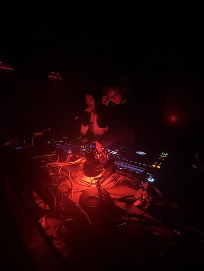
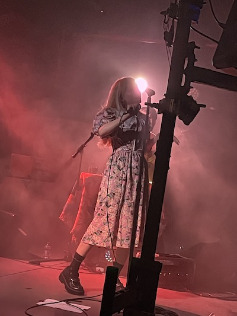

Before moving to Shanghai my understanding of music within China was limited to the little research I’ve done online. I had been listening to Hiperson’s “Bildungsroman” and Omnipotent Youth Society’s “Inside the Cable Temple,” two albums that powerfully highlight the strength of China’s rock scene on two different spectrums. I knew Bloodz Boi was leading a charge in extending an experimental branch out of the PRC, especially after gaining the co-signing of artists like umru, Claire Rousay, and Organ Tapes. Shushu’s 2021 experimental pop album “Sweet Verses Dying Like Roses,” paired with a remix by User2222, made me hopeful for what I could experience in Shanghai.
When modern popular music in China is discussed online, it all seems to point back to the late 80’s and 90’s era punk rock of the post cultural revolution generation. Blogs and video essayists are eager to point out the international success of bands like PK14 and Carsick Cars. And while they often show a thriving scene of experimentation, it is noticeably tight-knit for a country of over a billion. As the iPod, Pandora, and Soundcloud were all being released and the music industry was passing through multiple paradigm shifts, the Chinese government was adapting their internet censorship laws. By the end of 2006 the first iteration of the great firewall was in place.

Now as a thick haze continues to cover the country, popular culture, specifically music, struggles to break both in and out of the PRC. It’s my belief that this is true because of the post Y2K generation’s reliance on the internet and social platforms for information and communication. In a world where Blackpink and Bad Bunny are headlining Coachella, an American pulled off the street would be hard pressed to name a single Chinese musician from any point in history.
While I think a lot of blame can be placed on policy, I think much of this is cultural as well. Japan and South Korea dominate when it comes to popular culture soft power, whereas China’s biggest recent export in this area is Genshin Impact (a video game which is heavily influenced by Japanese RPG aesthetics). Anecdotally, I can say with some confidence that the average young American person would place Japan and South Korea much higher on a “coolness” scale if asked. I say this not because I think it’s true, but because I think that coexisting on social media platforms is incredibly important in our understanding of others in a world that is so interconnected online.
Moving now back into my personal experience while living here, what stood out to me the most was scale. When it comes to the different scenes, specifically in regards to music, they’re smaller and more connected than I would have guessed. You’re bound to see familiar faces and there’s a palpable sense of hierarchy among them. China is now open and once the dust settles I imagine touring acts and a more frequent rotation may change this, but I can only speak from a post-covid perspective.
I’ve had a wide range of experiences when it comes to the music focused clubs in the city. The posters and descriptions make it fairly easy to predict what you’ll encounter, ranging from the more experimental to the cookie-cutter techno to the “pick some obscure sub-genre and shove it down their throats” (some subtlety would be appreciated). I wonder if the scene being smaller in China leads to the more often seen “too cool to be here” attitude given off by some DJs who maybe studied abroad in Germany and now long for the day they’re back in Europe. But for the most part the club nights I have are more enjoyable than this may make them seem. Only soured by the times where you might spend 100RMB to be greeted by a mediocre mix and left without a drink ticket.

When it comes to live bands I’ve only attended a handful of shows with the highlights being Heat Mark, South Acid Mimi, and Forsaken Autumn. The Chinese crowds I’ve encountered have been attentive but mild, not far off from what I’ve experienced or what I would expect from the acts I’ve seen. I’m still figuring out the venue situation and what exactly someone means when they say “Live House,” but I think an issue Shanghai and other major hubs in China face is just a sheer and noticeable lack of venues. A band coming through Shanghai is likely to play at Yuyintang - or its sister venue, Yuyintang Park (both similar in size to the Shelter in Detroit). Yuyintang gives an authentic feel with a bar to the side and stickers and graffiti lining the walls. The space is great but I’m left wondering why this is the sole provider in such a massive city. Bands are limited in where they can play once they outgrow these spaces and risk sacrificing a certain feel or aesthetic. That’s not to say Shanghai doesn’t have more live music spaces, they do, but it is nowhere near comparable to a Chicago or LA.
I think what an issue like this highlights is another reason why Chinese music struggles to expand both internally and externally - a lack of resources. Of course time is not to their advantage when compared to other countries that have established music industries spanning over a century, however, I fear the major support that is needed for the music scene to grow here is focused in the wrong areas. With last years launch of Billboard China in collaboration with Tencent, I fear they are setting their focus on attempting to mirror South Korea’s success with K-pop. There has already been a massive campaign to promote Jackson Wang internationally - an artist who is currently on a world tour and mixing pro-China monologues into the middle of his sets. Despite being born in Hong Kong, Wang has been vocal in the past about his criticism of the 2018 protests.
If I had to pick a single word to sum up my feelings about music in China, and more specifically Shanghai, it would be “potential.” And not potential in the sense that it isn’t already there, but that it has an almost infinite amount of space to grow with the right opportunities and desire.
Taiwan is the most obvious example of where the industry in China could be with more openness. A tiny island under constant political stress with one of the most interesting and creative indie rock scenes around the world. More and more international artists continue to prove that the language barrier is not a proper excuse for why music doesn’t spread internationally in the age of streaming.